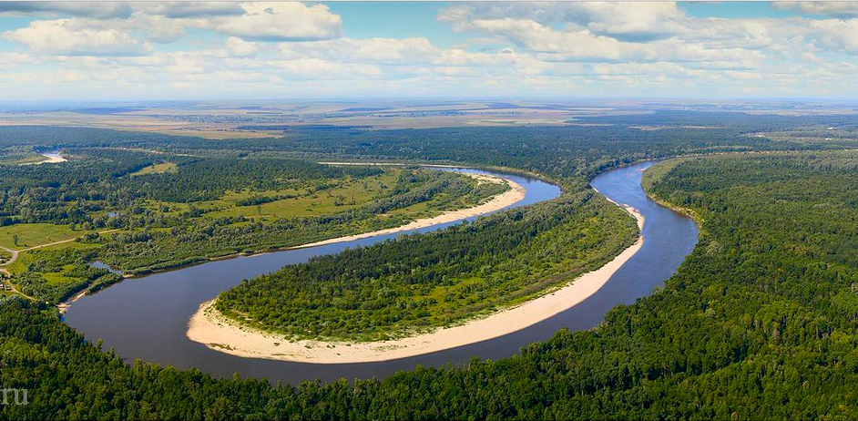
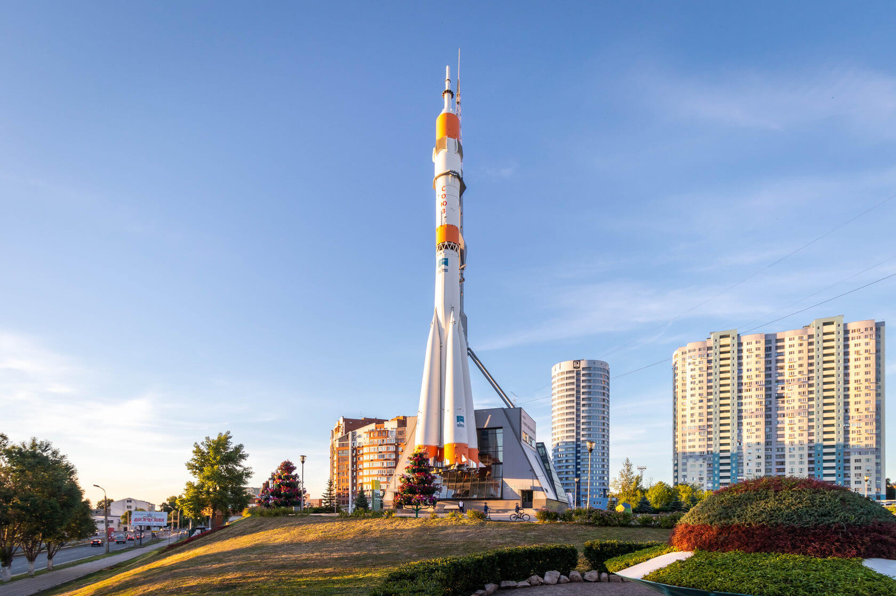

Сырный тур выходного дня с мастер-классом, деревенским обедом и пешей прогулкой по селу Подгоры (правый берег Волги, Волжский район) и в Заволжский женский Свято-Ильинский монастырь.
Теплоход +
автомобиль
Отправление:
Программа:
Транспорт:
Стоимость на чел.
Самара
Деревенский летний тур на эко-ферму
Этот тур специально для тех, кто с удовольствием вспоминает свое детство, проведенное у бабушки в деревне, и для тех, кто никогда не был, но мечтает насладиться свежим воздухом и простым человеческим счастьем.
Автобус
Отправление:
Программа:
Транспорт:
Стоимость на чел.
Самара
Тольятти
Гастрономический "Бараний тур"
Тур выходного дня на эко-ферму "В моих лугах" с дегустацией крафтового пива, мастер-классом по приготовлению соуса к мясу, метанием топоров, ножей и пилкой дров, и конечно, обед вкуснейшим барашком, зажаренным на вертеле, прямо на ваших глазах!
Автобус
Отправление:
Программа:
Транспорт:
Стоимость на чел.
Самара ж/д
Вкусные выходные в Самаре 18+
Вас ждут три дня гастрономических изысков волжской кухни, радушный прием по всем канонам купеческой, дореволюционной Самары. Вы не просто посетите интереснейший туристический город, вы познакомитесь с местными кулинарными традициями и получите незабываемые вкусовые впечатления.
Автобус
Причины отправиться в тур по Самарской области
1. Исторический изгиб Волги
Интересный факт: возвышенность, с которой открывается удивительный вид на крутой поворот Волги, была смотровой площадкой задолго до того, как появился массовый туризм. До 20 века отсюда следили за тем, как сплавляемые бревна проходили по узком участку Волги. В 30-е гг. территория отошла поселку Управленческий, построенному для руководства новой ГЭС. Правда, электростанция так и не была сооружена, и участок со временем пришел в запустение.

2. Настоящий ракето-носитель на городской площади
Высота всей конструкции — 68 м, вес — более 200 т. Огромная ракета прикреплена к фасаду кажущегося на ее фоне хрупким здания музея «Самара космическая». Приехав в Самару, невозможно не заметить один из символов города — устремленную ввысь ракету Р-7. Причем это не полноразмерный муляж, как, например, на ВДНХ, а настоящая ракета-носитель «Союз»! Во дворе музея есть забавный ростометр «Галактика» и вызывающий неоднозначную реакцию горожан «Космопупс» — пенопластовая фигурка космонавта. Несмотря на критику (и даже нападения вандалов), самарцы попросили вернуть им популярный объект фотографирования, когда космонавта с площади убрали.

3. Средневековый замок
Одна из самых ярких новых достопримечательностей Самарской области — это замок Гарибальди. Сюда едут художники — на пленэр, фотографы и модели — в поисках интересных локаций, да и вообще все: дети и взрослые, начинающие и опытные туристы.
Создатели замка не претендуют на историческую точность. Фундамент сооружения – оригинальный, относится примерно к 9–10 векам, 2-й и 3-й этажи стилизованы под 12–13 столетия, верхние этажи – под 16–19, а крыша – так вообще под 19 век с отсылкой к 15. Над проектом работает команда архитекторов, скульпторов и художников, стремящихся сделать так, чтобы все выглядело гармонично, и, судя по количеству посетителей, у них это получается. В строительстве использованы современные материалы, которые искусственно состарены, с окон свисает подобие паутины. Некоторые туристы, видевшие чешские и баварские замки, иногда хмурятся, разглядывая этот проект, но не стоит забывать, что любимый всеми Нойшванштайн — тоже вполне себе фантазийная крепость.
Сейчас замок Гарибальди закрыт, можно осмотреть северную и восточную стороны снаружи. Нагулявшись и попробовав немецкие карривурсты в местном кафе, многие спускаются на берег Жигулевского моря полюбоваться масштабами водохранилища, а в хорошую летнюю погоду — позагорать и искупаться.
Разработчики данного сайта являются студентами среднего профессионального учереждения Самарской области "Тольяттинский Мащиностроительный Колледж".
Авторы:
Реализация и адаптация - Кирилл Дмитриев
Дизайн и ресурсы - Тугушев Владислав.